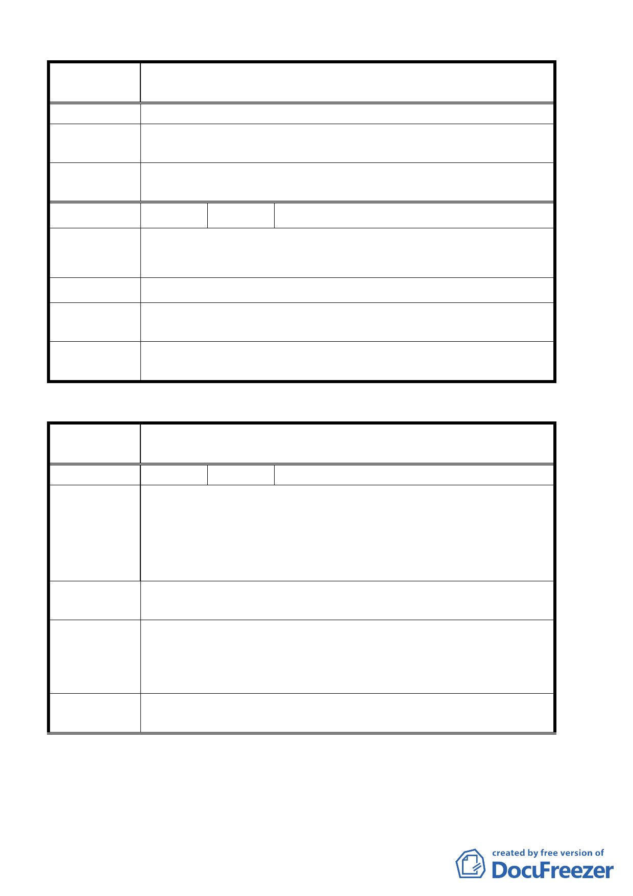

案 名 臺北市北投區都市計畫通盤檢討（細部計畫）案-----------
桃源稻香生活圈
建 議 辦 法 稻香路政戰學校旁機關用地變更為交通用地。
專 案 小 組 93.7.15 專案小組第六次審查會議：同意機關機用地變更為交
結 論 通用地。
委員會議
決議
同意依專案小組審查結論辦理。
編 號2
陳情人 高同 先生等 25 人（桃源稻香生活圈）
北投區桃源段 4 小段 71.73.74.75.76.77 地號土地變更為第三
陳情理由
種住宅區
建 議 辦 法 住二變更為第三種住宅區
專案小組
結 論 94.3.3 專案小組第十一次審查會議：同意維持原計畫。
委員會議
決 議 同意依專案小組審查結論辦理。
臺北市都市計畫委員會公民或團體陳所提意見綜理表
案
名
臺北市北投區都市計畫通盤檢討（細部計畫）案-----------
政戰新北投生活圈
編
號１
陳情人 台北市政府交通局
交通部公路總局所屬土地（觀光商業專用區）位於本市北投區
中山路與光明路交叉口（北投區新民段二小段五五○地號），目
陳 情 理 由 前現況為柏油鋪面供人車通行使用，業經交通部公路總局同意
無償提供。為因應北投空中纜車營運後吸引大量人潮由捷運新
北投站穿越路口之需要。
建議辦法
請變更為道路用地，俾本府工務局養工處設置人行道，以維行
人通行安全。
93.10.14 專案小組第八次審查會議：同意因考量基地之規模及
專案小組
結 論 「北投溫泉親水公園特定專用區」內相似案例之處理方式，變
更該特定觀光商業專用區為人行步道用地 。
委員會議
決議
同意依專案小組審查結論辦理。
第 28 頁，共 49 頁